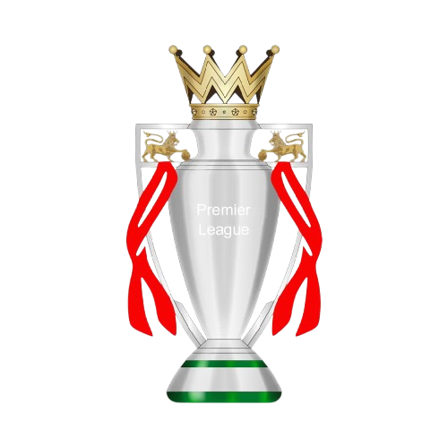
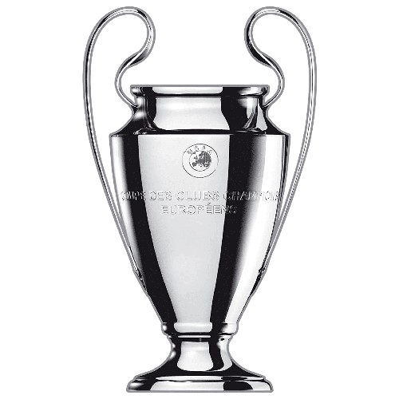
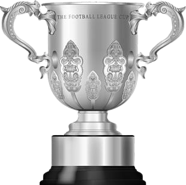
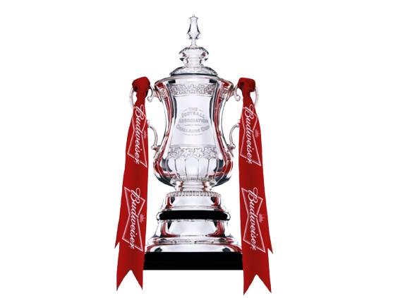

The Golden Era (1960s–1989)
From the clatter of Anfield’s old wooden stands rose a dynasty—born under
Bill Shankly, sharpened by
Bob Paisley, and crowned by
Kenny Dalglish.
Paisley’s record is immortal: 6 league titles, 3 European Cups, 3 League Cups, and a calm hand that never missed.
The '80s roared with dominance—
Joe Fagan’s treble in 1984, Dalglish's reign of class and control, and a team that ruled with grace and fire.
By 1990, Liverpool stood atop English football with 18

league titles, 4

European Cups, 2 UEFA Cups, 5

League Cups, and 4

FA Cups—unmatched, untouchable.
Anfield was more than a ground—it was where greatness was routine.
The Years of Waiting (1990–2015)
But empires crumble, even red ones. After 1990, the league crown slipped away like smoke in the cold.
The faithful waited while
Graeme Souness,
Roy Evans,
Houllier, and
Benítez each tried to awaken the giant.
There were sparks—the 2001 treble under Houllier (FA Cup, League Cup, UEFA Cup), and the miracle of Istanbul in 2005 under Benítez—Champions League No. 5.
Steven Gerrard became the heart of a city—joined by
Torres,
Suárez,
Alonso, yet still no Premier League.
Trophies came in bursts—FA Cup 2006, League Cups in 2003 and 2012—but the crown of England remained a dream.
The Klopp Era and the Return to Glory (2015–Present)
Then came
Jürgen Klopp, with thunder in his chest and belief in his boots. He didn’t just rebuild—he revived.
The team of
Salah,
Mané,
Firmino,
Van Dijk,
Alisson, and
Trent alex stormed Europe and England with pressing, passion, and pride.
2019 brought the sixth European Cup, and then—after 30 years of agony—Liverpool won the Premier League in 2020, finishing 18 points clear.
The trophies kept coming: FA Cup (2022), League Cups (2022, 2024), UEFA Super Cup, FIFA Club World Cup.
Klopp's Liverpool wasn’t just brilliant—it was beloved. When he departed in 2024, he left a fortress behind.
Now under Arne Slot, a new chapter begins—but the standard remains: to win with heart, and walk with history.
The Tragedies That Shaped the Soul
Yet Liverpool’s legacy isn’t just written in gold—it’s carved in sorrow.
Heysel (1985) turned a final into mourning—39 lives lost, a stain on Europe and a five-year exile for the club.
Then came
Hillsborough (1989)—97 supporters crushed, victims of failure, not fate.
For decades, truth was buried, and the club carried that grief like a badge of honor—fighting for justice, never forgetting.
In 2025, tragedy struck again—
Diogo Jota, in the prime of his career, died in a car crash. Beloved by teammates, mourned by millions, his No. 20 was retired forever.
Liverpool doesn’t hide its scars. It wears them with pride. For in this club, the fallen walk with the living, and every chant, every anthem, echoes their names.